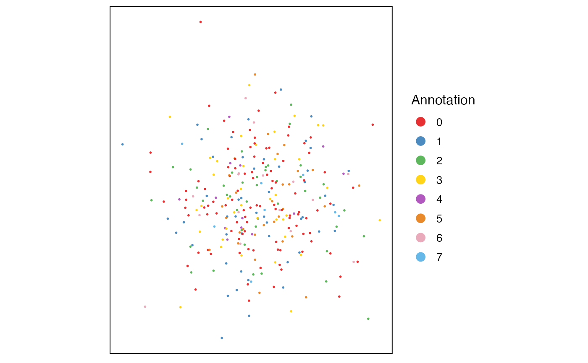

Simple visualization of spatial coordinates. See example code for how to have information preset in the object. Arguments to the liger object method are passed down to ligerDataset method.
Usage
plotSpatial2D(object, ...)
# S3 method for liger
plotSpatial2D(object, dataset, useCluster = NULL, legendColorTitle = NULL, ...)
# S3 method for ligerSpatialDataset
plotSpatial2D(
object,
useCluster = NULL,
legendColorTitle = NULL,
useDims = c(1, 2),
xlab = NULL,
ylab = NULL,
labelText = FALSE,
panelBorder = TRUE,
...
)Arguments
- object
Either a liger object containing a spatial dataset or a ligerSpatialDataset object.
- ...
Arguments passed on to
.ggScatter,.ggplotLigerThemedotOrderControls the order that each dot is added to the plot. Choose from
"shuffle","ascending", or"descending". Default"shuffle", useful when coloring by categories that overlaps (e.g. "dataset"),"ascending"can be useful when coloring by a continuous variable (e.g. gene expression) where high values needs more highlight.NULLuse default order.dotSize,dotAlphaNumeric, controls the size or transparency of all dots. Default
getOption("ligerDotSize")(1) and0.9.rasterLogical, whether to rasterize the plot. Default
NULLautomatically rasterize the plot when number of total dots to be plotted exceeds 100,000.labelTextSizeNumeric, controls the size of label size when
labelText = TRUE. Default4.seedRandom seed for reproducibility. Default
1.showLegendWhether to show the legend. Default
TRUE.legendPositionText indicating where to place the legend. Choose from
"top","bottom","left"or"right". Default"right".baseSizeOne-parameter control of all text sizes. Individual text element sizes can be controlled by other size arguments. "Title" sizes are 2 points larger than "text" sizes when being controlled by this.
titleSize,xTitleSize,yTitleSize,legendTitleSizeSize of main title, axis titles and legend title. Default
NULLcontrols bybaseSize + 2.subtitleSize,xTextSize,yTextSize,legendTextSizeSize of subtitle text, axis texts and legend text. Default
NULLcontrols bybaseSize.legendDotSizeAllow dots in legend region to be large enough to see the colors/shapes clearly. Default
4.colorLabelsCharacter vector for modifying category names in a color legend. Passed to
ggplot2::scale_color_manual(labels). DefaultNULLuses original levels of the factor.colorValuesCharacter vector of colors for modifying category colors in a color legend. Passed to
ggplot2::scale_color_manual(values). DefaultNULLuses internal selected palette when <= 26 categories are presented, otherwise ggplot hues.legendNRow,legendNColInteger, when too many categories in one variable, arranges number of rows or columns. Default
NULL, automatically split toceiling(levels(variable)/10)columns.naColorThe color code for
NAvalues. Default"#DEDEDE".scale_colour_gradient2. DefaultNULL.
- dataset
Name of one spatial dataset.
- useCluster
Either the name of one variable in
cellMeta(object)or a factor object with annotation that matches with all cells in the specified dataset. DefaultNULLuses default clusters.- legendColorTitle
Alternative title text in the legend. Default
NULLuses the variable name set byuseCluster, or"Annotation"isuseClusteris a customized factor object.- useDims
Numeric vector of two, choosing the coordinates to be drawn on 2D space. (STARmap data could have 3 dimensions.) Default
c(1, 2).- xlab, ylab
Text label on x-/y-axis. Default
NULLdoes not show it.- labelText
Logical, whether to label annotation onto the scatter plot. Default
FALSE.- panelBorder
Whether to show rectangle border of the panel instead of using ggplot classic bottom and left axis lines. Default
TRUE.
Examples
ctrl.fake.spatial <- as.ligerDataset(dataset(pbmc, "ctrl"), modal = "spatial")
fake.coords <- matrix(rnorm(2 * ncol(ctrl.fake.spatial)), ncol = 2)
coordinate(ctrl.fake.spatial) <- fake.coords
#> ! No rownames with given spatial coordinate. Assuming they match with the cells.
#> ! No colnames with given spatial coordinate. Setting to "x" and "y"
dataset(pbmc, "ctrl") <- ctrl.fake.spatial
#> ℹ Updated QC variables: "nUMI" and "nGene"
defaultCluster(pbmc) <- pbmcPlot$leiden_cluster
#> ℹ Storing given cluster labels to `cellMeta(x)` field: "defaultCluster".
plotSpatial2D(pbmc, dataset = "ctrl")
